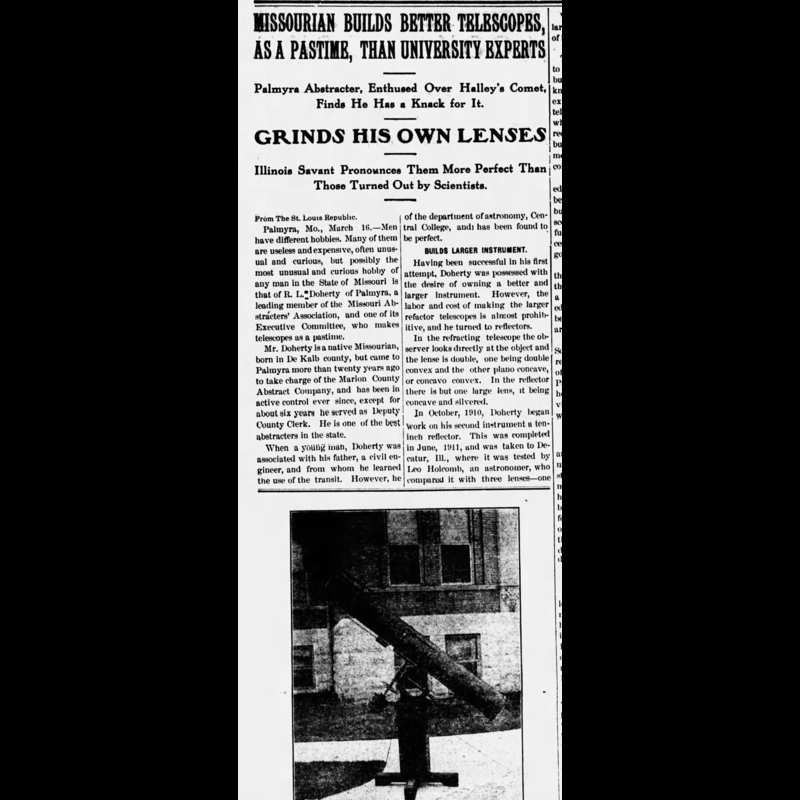

A Timeline of the Mark Twain Title Company
Mark Twain Title Company traces our origins back to 1898, when we were known as Marion County Abstract Company, a name we still hold the rights to. The company has been through many changes over the years, but the one thing that hasn't changed is our dedication to providing the area with the best title insurance and real estate services around. Please take a look at our company timeline, spanning over a century.
Mark Twain Title Company: A Visual History
January 20, 1898
The formation of the Marion County Abstract Company is announced.
(Palmyra Spectator 1/20/1898)
(Palmyra Spectator 1/20/1898)

January 27, 1898
Announcement of location for the company.

February 3, 1898
Announcement of the election of members for Marion County Abstract Company.

February 17, 1898
Announcement of anticipated opening of facility.

March 24, 1898
Advertisement for Marion County Abstract Company.

April 28, 1898
Advertisement for Marion County Abstract Company.

April 16, 1902
Spectator profile of the then-owner of the Marion County Abstract Company, Robert Lee Doherty, AKA R. L. Doherty.

April 10, 1912
R. L. Doherty profile on their service in the war.

July 1, 1914
R. L. Doherty remained with the company after its sale.

June 12, 1935
William P Johnson passed away and left the company to his 2 sons, Robert Johnson and Stewart Johnson.

January 6, 1943
Both Stewart Johnson and Robert Johnson were inducted into World War II and had to close the company down for “the duration.”

October 20, 1943
Stewart Johnson and Robert Johnson profile on their service in the war.

November 14, 1945
Announcement of the re-opening of the Marion County Abstract Company.

November 14, 1945
Profile for the re-opening of the Marion County Abstract Company.

October 3, 1957
Announcement of Bob Johnson purchasing the company.

March 9, 1960
Article detailing the Palmyra Explosion of 1960, which occurred March 2, 1960.

March 9, 1960
Article detailing the Palmyra Explosion of 1960, which occurred March 2, 1960.

March 9, 1960
Photo showing the building damage.

March 10, 1960
Announcement thanking everyone for the help after the explosion.

November 24, 1960
Photograph showing the new building rebuilt after the explosion.
November 24, 1960
Article showing the new building rebuilt after the explosion.

November 24, 1960
Century Press newspaper post congratulating Marion County Abstract Company on their new building.

November 24, 1960
Photo showing the deed writing process used.

November 24, 1960
Photo showing the microfilm process.

Today
Today Mark Twain Title Company is